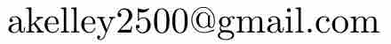

Scheduled release: March 9, 2025 at Amazon.com
Does math seem like a bunch of arbitrary rules? This book is here to explain clearly why most of the rules aren't arbitrary at all. There are good reasons for them! The purpose of this book is to explain the reasons for the main rules learned in middle school and high school mathematics (i.e., for 6th through 12th grade). It is written from a conservative, Christian perspective.
Andrew's goal throughout the book is to explain why the rules work the way they do. Applications to real world problems are only occasionally mentioned in passing. For most rules, instead of giving rigorous proofs, Andrew explains the essence for why the rules work. He focuses on the heart of why they are true.
Why learn reasons for the rules?
If you understand why a rule works and know why it is true, then you are more likely to remember the rule, use it correctly, and know when it applies and when it doesn't. Having real insight can also set you apart. If you can only mechanically follow rules without understanding them, what sets you apart from a computer? Computers can do math, but they still lack real understanding. People who don't want to be replaceable by a computer, should seek to understand. Finally, when math makes sense, it is much more enjoyable.
A supplement to traditional curriculum
This book isn't meant to be a standard textbook used for just one year of school. Rather, Andrew tried to make it the best supplement to use while studying math in middle school and high school. Homeschoolers and those teaching themselves should find this book incredibly helpful. You can find it at Amazon.com.
Table of Contents
Click a chapter to view more.
- Chapter 1. Fractions
- 1.1 Adding fractions
- 1.1.1 Adding fractions demonstration
- 1.1.2 Comments on adding fractions
- 1.2 Multiplication of fractions
- 1.3 Division of fractions
- 1.3.1 Another explanation of division by fractions
- 1.4 How to write fractions
- 1.4.1 Drawing fraction lines
- 1.4.2 Mixed numbers
- 1.5 Reducing fractions
- 1.1 Adding fractions
- Chapter 2. Pre-algebra
- 2.1 What is a variable?
- 2.2 Order of operations
- 2.2.1 An advanced but important note
- 2.3 Equations and expressions
- 2.3.1 Solving a simple equation
- 2.4 Exponents
- 2.4.1 The foundational exponent rule, and a consequence of it
- 2.4.2 What you can't do with exponents
- 2.5 Why does \(2^0 = 1\) and \(2^{-1} = \frac{1}{2}\)?
- 2.5.1 Other reasons why \(2^0 = 1\) and \(2^{-1} = \frac{1}{2}\)
- 2.5.2 Two short reasons why \(2^{-1} = \frac{1}{2}\)
- 2.6 Distributing and factoring
- 2.6.1 What can't be distributed
- 2.6.2 A despicable acronym
- 2.7 Lines
- 2.8 A general piece of advice in solving for \(x\)
- 2.9 A brief note on word problems
-
Chapter 3. Arithmetic
-
How numbers are represented
- Roman numerals
- Using decimals
- Multiplication as repeated addition
- Multiplication of multi-digit numbers
- Lattice method for multiplication
- Division by 0
- Another reason why we can't divide by 0
- Negative numbers
- Two interpretations of numbers
- A tiny bit of algebra
- Remainders and divisibility rules for 3 and 9
- Binary numbers
-
How numbers are represented
-
Chapter 4. Algebra
- Background
- Square roots, cube roots, and exponents being fractions like 1/2 or 1/3
- So why does \(100^{1/2} = \sqrt{100}\)?
- Functions
- Composition of functions
- Graphing functions
- The absolute value function
- More on the square root
- Factoring and quadratics
- Factoring polynomials: difference of two squares
- Solving for \(x\) when it is in the denominator
- Cross multiplying
- When \(x\) is in the denominator of two fractions
- Fractions part two
- Reducing fractions with variables
- Adding fractions with variables (and subtracting them)
- Multiple equations with multiple unknowns
- A word problem
- Solving for \(x\), the big picture
- Inequalities
- Reversing the direction of an inequality
- Completing the square
- Deriving the quadratic formula
- Logarithms
- The logarithm as the inverse of the exponential function
- The product-to-sum rule for logarithms
- Pulling an exponent out and in front of the logarithm
- The change of base formula
- The rational root theorem for polynomials
- Further reading
-
Chapter 5. Geometry
- The Pythagorean Theorem
- Why do the angles in a triangle add to 180°?
- A universally applicable formula about area
- The area of a parallelogram
- Why does a circle with radius \(r\) have area \(πr^2\)?
- Why is the circumference of a circle \(2πr\)?
- Getting the formula \(πr^2\)
- Comments on proofs
-
Chapter 6. Logic
- The basics of logic
- Conditional statements
- The usage of "or"
- Proofs
- Foundational things
- Logical fallacies and errors in reasoning
- The basics of logic
-
Chapter 7. Trigonometry
- Radians
- Sine, cosine, tangent -- triangle definition
- The unit circle
- The graph of tangent
- Trig identities
- Identities with other trig functions
- The sum identity for sine
- The sum formula for cosine
- The difference formulas for sine and cosine
- The law of sines
- The law of cosines
- Why is winter colder the more north you go?
- Further reading
-
Chapter 8. Complex numbers: \(i = \sqrt{-1}\)
- Numbers and the complex plane
- Adding complex numbers
- Multiplying complex numbers
- Polar representation
- Euler's formula
- Polar representation
- Applications
- Trigonometric identities
- Adding sine and cosine together
-
Chapter 9. Probability
-
Basic set theory
- Union and intersection
- Cartesian product
- When to add? When to multiply?
- From counting to probability
- Independent events
- Making groups--when order does or doesn't matter
-
Binomial coefficients: "\(n\) choose \(k\)"
- Binomial coefficients and probability
- Another derivation of the formula for \(n\) choose \(k\)
-
Rolling many-sided dice many times
- An extremely secure "password"
- A challenge problem
-
Basic set theory
-
Chapter 10. Precalculus
- Functions
- Graphing functions
- Graphing the inverse of a function
- Shifting the graph of a function
- Stretching/shrinking the graph of a function
- A graphical reason why \(\sqrt{a + b} \neq \sqrt{a} + \sqrt{b}\)
- Solving for \(x\) with the composition of functions
- Factoring revisited
- The sum and difference of cubes and related patterns
- Factoring quadratics whose leading coefficient isn't 1
- Product-to-sum trigonometric identities
- Conic sections
- An ellipse
- A hyperbola
- The principle of induction
- One more note on functions
-
Chapter 11. Calculus
- Limits
- Two tips for limits
- Continuity
- Derivatives
- The derivative as a function
- Rules for taking derivatives quickly
- The sum rule
- The product rule
- The chain rule
- The quotient rule
- Integrals
- The Fundamental Theorem of Calculus (FTC)
- Limits of indeterminate form
- Infinite series
- A few tests for convergence
- How fast certain functions approach infinity
- An extended example
- Limits
-
Chapter 12. What is Mathematics?
- How this book differs from traditional math
- The Königsberg bridge problem
- Different infinities?
- The fold and cut theorem
- Fermat's last theorem
- Going beyond the quadratic formula for higher degree polynomials
- The four color theorem
- Arithmetic progressions among primes
- A random walk in an infinite space
- The prime number theorem
- The twin primes conjecture
- Stirling's formula
- More on infinite series
- Converse of the intermediate value theorem
- Symmetry
- The longest proof written by humans
- Conclusion
Download a free sample of the book. The author grants you permission to freely distribute this sample. You can buy the book at Amazon.com. It should be available, God willing, on March 9th.
Reviews/Endorsements
"Looks very thoughtfully written for easy understanding." - Mike Summerhays, Engineering Fellow
"That makes so much sense." - Mary Ann Brubaker, 85 years old (commenting on the fractions chapter)
"I thought the fractions chapter was quite clear and easy to understand and follow." - Elizabeth Mayner, former homeschool mom
"An impressive book." - Marilyn Frydrych, math teacher and math lab coordinator at Pikes Peak State College
"Most math teachers (and students!) are deeply familiar with the common impulse in mathematics education to “just learn the formula,” apply it, and move on. After all, that’s the goal, right? Well, actually no, not if you really want to learn mathematics. What I so appreciate about Andrew Kelley’s work is his relentless emphasis on understanding real mathematics – the ‘why’ behind the formula – and his skillful explanation that makes those beautiful concepts accessible to the student. I believe Andrew’s work can turn what many students experience as dull and dry manipulation of indecipherable symbols into a delightful exercise in finally understanding the beauty, usefulness, and design of mathematics. You won’t be disappointed." - Jim DeKorne, retired math teacher and former principal of Colorado Springs Christian Schools
"I completed chapter 1 and really enjoyed the process of relearning and better understanding fractions! Your examples are easy to identify with, your explanations are clear, and your conversational style made me feel like I had the help of a tutor via the text." - Gayle Meredith, senior library associate
"So far, I’m loving it!...I really like your descriptions and how you develop ideas/concepts, especially in discussing the inherent properties of seemingly simple ideas (which, of course, are not usually simple)...I also very much like how you explain the logic and thought processes behind each concept. You present so much more than a set of rules (most math textbooks don’t do much more than presenting a set of rules); you really give the reader a sense of how these ideas and concepts were developed and why...You also do a great job of connecting the concepts...Your Motivation questions are excellent, really drawing readers to consider the concepts more deeply...You’ve combined so many deeply connected ideas and provided understanding of why these concepts are important, and how they might be used and applied." - Erica Hastert, college math teacher
"The book will make a great companion to math textbooks throughout subjects like algebra, advanced algebra, geometry, trigonometry, and calculus. The conversational style the book is written in makes it easy to understand and follow. It would make a welcome addition to texts used by homeschool parents to help explain new concepts, new math principles, and new ways of thinking that are typically stumbling blocks for many being introduced to math throughout the Jr. High-High school years." - Jim Crowder, PhD, Mathematician and Engineering Fellow
Comparison with other math textbooks
Click a book to compare it with "Understand Math: Reaons for the Rules" by Dr. Andrew Kelley.
After Andrew wrote most of his book, he compared it with at least 25 other math books. In summary, most math books do not explain the reasons behind most rules. This is precisely the shortcoming that Andrew attempted to fill.
- "Saxon Math Homeschool 8/7"
- Saxon "Algebra 1/2: An Incremental Development"
- Saxon "Algebra 1: An Incremental Development"
- Saxon "Algebra 2: An Incremental Development"
- "Pre-algebra" by Richard Rusczyk, David Patrick, Ravi Boppana
- "Understanding Mathematics: From Counting to Calculus" by Keith Kressin
- "Pre-Algebra" by Davison, Landau, McCracken, Thompson
- "Pre-Algebra Textbook 2nd edition" by The Department of Mathematics College of the Redwoods 2012-2013
- "Everything you need to ace math in one big fat notebook (The complete middleschool study guide)"
- "Introductory Algebra: A Just-in-Time Approach" by Alice Kaseberg
- "Algebra and Trigonometry 6th edition" by Robert Blitzer
- "Algebra 2: Common Core Edition" by Larson, Boswell, Kanold, Stiff
- "Trigonometry for Dummies 3rd edition" by Mary Jane Sterling
Saxon explains fractions decently well in this book. His explanation of how to add fractions isn't bad either. He explains the distributive property better than some books, but he still doesn't fully explain why it works. His explanation of reducing fractions is good, but his explanation of dividing by fractions isn't as clear as it could be. His explanation of negative exponents is pretty good, as well as when 0 is an exponent. For the topic of probability, he makes a misleading assumption and doesn't clarify that his assumption doesn't always apply in probability. Overall, this is a legitimate option to use as a main curriculum.
Saxon mentions that \(12 \times 7 = 7 \times 12 \), but he doesn't explain why. His explanation of fractions isn't the clearest. For multiplication and division by fractions, he does not explain why the rules work, but he does have a good visual for adding fractions. His description of variables is not the best. He does not explain why cross multiplying works, and he gives no explanation (besides an example) for why the distributive property works.
Unfortunately, Saxon gives an erronous explanation for a problem about cube roots. This isn't just a typo. He tries to round \(\sqrt[3]{250}\) to the nearest whole number, but his reasoning is completely incorrect. He uses the same misguided reasoning when he estimates \(\sqrt[4]{390}\) to the nearest whole number. His error is a subtle one that is easy to make for people who are not mathematicians. What he does is say that because 390 is closer to \(4^4\) than to \(5^4\), then \(\sqrt[4]{390}\) rounds to 4. While this may seem plausible (and while \(\sqrt[4]{390}\) happens to round to 4), the reasoning he gives is fundamentally flawed. Indeed, consider \(\sqrt[4]{416}\). The number 416 also is closer to \(4^4\) than to \(5^4\), but \(\sqrt[4]{416}\) actually rounds to 5. This is because the fourth root function is not a straight line, and so it is not valid to round it before applying the fourth root.
In this book, Saxon's explanation of negative exponents is not good, and in fact, it is actually misleading. He gives no explanation for why negative exponents work the way the do. He also states, "It is impossible to evalute \(\frac{4^{-2}}{1}\) as it is, because a negative exponent does not indicate an operation." However, he is mistaken about this.
Overall, Saxon Algebra 1/2 is neither the best nor the worst option for a pre-algebra textbook.
Saxon does not explain why the distributive property works. He explains neither why \(a(b+c) = ab + ac\) nor why \((a+b)(c+d) = ac + ad + bc + bd\). Another rule he does not explain is why \(\sqrt{mn} = \sqrt{m}\sqrt{n}\) for non-negative numbers \(n\) and \(m\). One very important topic for algebra is that of "functions," but Saxon's explanation of this topic is confusing, and he does not mention that \(f(x)\) is not \(f\) times \(x\). Next, his explanation of completing the square is not very good, and he sticks with using it only in equations, even though you don't need an equation to compelete the square. In lesson 30, he introduces the rule for cross multiplying without giving any indication for why it works (even though explaining it is very simple). Finally, when talking about dividing by a fraction, he does give an explanation for why it works, but he is not very clear on one crucial detail.
The following quote by Saxon is illustrative. He claims in lession 35, on page 158,
"There are two ways to write the square root of 2.However, Saxon is completely mistaken that there is no reason for why \(\sqrt{2} = 2^{1/2}\). Even if it is a definition, that does not mean there is no reason for it or that it is arbitrary. In general, Saxon often does not explain why the rules are what they are.\(\sqrt{2}\) and \(2^{1/2}\)
There is nothing to understand, for this is a definition of what we mean when we use the square root radical sign or the fractional exponent \(1/2.\text{"}\) - Saxon Algebra 2 [emphasis added by bolding text]
Finally, Saxon only applies completing the square in equations, even though it is useful to know how to do it outside of an equation. His explanation of functions is not very good, and he uses some uncommon terminology. He does do a decent job explaining logarithms, but it isn't as clear as it could be.
This book is somewhat advanced, but it is an excellent choice for its intended audience. They do explain why \(2^0 = 1\), but they only give one explanation for it. The explanation they do give happens to be Andrew's favorite explanation, but in "Understand Math," Andrew gives four reasons for why having an exponent of zero results in a number equal to one. (Normally, Andrew only gives one or two explanations for a rule.)
They don't explain why distributing \(a(b+c)\) works, and Andrew's explanation of fractions is simpler than theirs.
Finally, their book is organized by beginning each section with problems to attempt. Students are expected to struggle with some problems before being giving the tools useful to solve them. For advanced students, this is not necessarily a bad approach.
Kressin's book does have some good material in it, and people have benefited from his book. Just like Andrew, Kressin also covers a broad range of math, and his book is intended to be used as a supplement to traditional curriculum. Both Andrew and Kressin are not trying to always be rigorous. To some extent, Kressin's book does attempt to answer the question, "Why do I have to do it like that?" However, there are many rules Andrew explains which Kressin does not. Because Keith Kressin's book may appear to be similar to Dr. Andrew Kelley's, book, a detailed comparison is given here. Every rule mentioned below that Kressin does not cover is explained by Andrew.
Kressin begins with counting, but Andrew assumes his readers already know how to add, subtract, multiply, and divide whole numbers. Kressin doesn't explain the distributive law very thoroughly, and he gives no geometric meaning to it. Kressin does prove the quadratic formula, but he doesn't explain completing the square very thoroughly (even though it is used as a crucial step in deriving the quadratic formula). Kressin does show how to divide polynomials (one topic that Andrew does not explain).
In geometry, Kressin doesn't show why the Pythagorean Theorem is true nor why the area of a circle is \(\pi r^2.\)
Kressin does include 12 pages on matrices, but Dr. Andrew Kelley on the other hand, being a mathematician who has taught college level mathematics, thought that it is better to omit matrices for two reasons. First, every book on linear algebra explains them. Second, many students never encounter matrices until after they take calculus.
In Chapter 2, Kressin gives a definition of "number" that is not very accurate. He states, "A number is a symbol used to represent a collection of things." However, this is not an accurate definition. Kressin does not explain why the rule for multiplying fractions is what it is, but he does very briefly address why dividing by 1/2 is the same as multiplying by 2.
For logarithms, Kressin explains that \(\log(ab) = \log(a) + \log(b)\), but he doesn't explain the change of base formula. As for complex numbers, he doesn't explain the geometric interpretation of multiplying by \(i\).
For trigonometry, he does not explain where any of the trig identities come from (except barely hinting at one of them). He also doesn't explain the concept of radians very well. He does at least explain that \(\sin(\theta - 90°)\) is not \(\sin(\theta) - \sin(90°)\).
Kressin gives only one explanation why \(b^0 = 1\) (whereas Andrew gives four explanations, which is the most explanations Andrew gives on any topic).
He doesn't explain the fundamental theorem of calculus. Dr. Andrew Kelley, on the other hand, explains it thoroughly. For derivatives, Kressin doesn't explain why the sum rule, product rule, quotient rule, or chain rule works.
Finally, Kressin has no chapter on probability nor one on logic. He also gives no intuitive explanation for what a function is, even though the concept of functions is completely essential for practically all of math from advanced algebra and beyond.
They almost explain the distributive property in an "Investigate" section at the beginning of a section, but they don't fill in the details. They don't explain why multiplying or dividing both sides of a fraction by the same number results in an equivalent fraction. They do give one reason why \(3^0 = 1\) (whereas Andrew explains this concept using four explanations). They don't clearly explain why the rule for adding fractions works. They also don't explain why the rule for multiplication by fractions works. In probability, they make an incorrect statement that many people are confused about. They do explain why \(3 \div \frac{1}{2} = 3 \times 2 \), but that is the only example of dividing by fractions that they explain when introducing the concept. Finally, their explanation of functions is not very good. Overall, this book looks decent.
On pages 33-34, their explanation for why multiplication of whole numbers is commutative isn't the best. On page 40, their explanation of why division by 0 is undefined isn't the best either. On page 68, they give an example of the distributive property, but they don't explain why it works. They also don't fully explain why reducing fractions works, and they don't clearly explain what fractions are. Overall, this is a decent book.
This book does not explain why the rules are what they are. It is basically a collection of some examples and exercises. It gives the rule that \(6^0 = 1\) but doesn't say why. It also doesn't explain why dividing by a fraction is the same as multiplying by the reciprocal (i.e., "copy dot flip"). It also doesn't explain why reducing fractions works the way it does nor of multiplication of fractions. Their explanation of functions is not very good, and what is more, their example of page 418 is extremely misguided and misleading. (They basically imply that a line is a set of five points in the plane, which is completely false. They even repeat this error on page 420 and on page 426.) This is not a very good book and should probably be avoided.
On page 83, Kaseberg states the rule that \((xy)^{a} = x^ay^a\) but gives no reason for it. On page 84, she states that \((x^a)^b = x^{ab}\) and again gives no reason for it. She does give one reason why \(5^0 = 1\), and she gives one reason why \(x^{-2} = \frac{1}{x^2}\). On page 175, she says that an inequality should be reversed when multiplying by a negative, but she gives no reason for it. She also does not justify the distributive property. Her explanation of functions is not the greatest. Logarithms are not covered in this book (which makes sense, since it is only introductory algebra).
Andrew considers this one of the best books on algebra he reviewed. The main thing some readers might dislike is that Blitzer talks about politically left issues with a leftist bias. Besides that, he does explain some of the rules more than many math books, but he doesn't explain them as much as Andrew does. Overall, Blitzer's book is very polished.
Although Blitzer doesn't explain why distributing works, he does explain the fundamental rule of exponents that \(b^m b^n = b^{m+n}\). He also explains that \(b^m/b^n = b^{m-n}\), and he explains why \(\sqrt{7} = 7^{1/2}\).
When discussing the topic of completing the square, he does give a brief visualization of it but does not explain it as thoroughly as Andrew does. As for multiplying both sides of an inequality by a negative number, Blitzer doesn't explain why the direction of the inequality is flipped. He does explain the topic of functions better than some. He also explains where the point-slope formula comes from. As for logarithms, he explains most of the log rules, but Andrew could find no explaination of the change of base formula. As with most math textbooks, Blitzer has an abundance of exercises, which works well when there is a teacher to choose which ones to assign. Overall, Andrew thinks this is a solid book that has a bias that is politically left.
They introduce logarithms as equations to be rewritten, which is not the best way to introduce that topic. As with many math books, they list rules of how to use logs without giving even a hint for why they work. They at least explain why \(\sqrt{a} = a^{1/2}\). They don't explain why the rational roots theorem is true, but they do give a picture that shows geometrically what completing the square is doing, and they do explain why \(2\pi\) radians is 360°. They don't explain why the law of sines is true nor the law of cosines. They don't explain where the trig identities come from.
Andrew recommends against using this book. Her picture of how big a radian is about 25% too small, and she makes a very misleading claim that a radian "isn't even a rational number." This statement she makes is very misguided. To have one radian is to have the number 1, which most definitely is a rational number. What Sterling meant is that if you measure a radian using the different unit of degrees, then in that case it isn't a rational number. Regardless, just like most math books, Sterling does not explain where most of the trig identities come from (or why they are true).
Frequently Asked Questions
Click a question to view the answer.
- Why is this book called a supplement?
- Can someone read this book without help from a teacher?
- How is this book written from a Christian perspective?
- How can I use this book in homeschooling?
- Why doesn't this book have thousands of homework problems?
- Is this book more suited for struggling students, average ones, or advanced students?
- Does this book use the spiral method?
This book covers math from fractions through calculus. It simply isn't possible to cover the entirety of those topics in depth without making the book enormously large. The focus of this book is to explain the reasons behind the main rules learned in middle school and high school. Andrew's aim has been to fill in what is missing in most curriculums; that missing piece is a failure to explain why the rules work. He felt no need to re-do the same things that any solid curriculum already does well.
Yes, any motivated reader can work carefully through this book without the help of a teacher. However, it is undeniable that no matter your curriculum, it is helpful to have a knowledgeable and patient person you can go to for help, but this book was written with the assumption that readers do not have access to such a teacher/tutor. In particular, almost every single question given in the book also has a full explanation of the answer (showing all work).
Other than the quotations from the Bible, a Biblical perspective is presented throughout. In the logic chapter, Dr. Kelley explains that objective truth exists, and he discusses a number of logical fallacies that many non-Christians are guilty of. These include mathematical fallacies as well as non-mathematical ones. As an example of a mathematical fallacy, some people who take advanced math claim that it is not an absolute truth that \(1+1 = 2\), but Andrew explains why they are mistaken and even names the particular fallacy they commit.
A Christian perspective is sprinkled throughout Understand Math: Reasons for the Rules. As another example, because there are so-called "imaginary" numbers (\(i = \sqrt{-1}\)), some people say that in math, you can make up whatever you want. Dr. Kelley specifically teaches against that. Andrew's conservative, Christian perspective is evident from multiple parts of this book.
Click a section to view more.
All students (click to view)
All students need to attempt the exercises and motivation questions before reading the fully explained answers in the book. It will be very tempting for readers to read the solutions before attempting problems themselves, and this must be avoided. How you go about ensuring this depends on the level of maturity of your student.
Most students (click to view)
Most people don't enjoy math enough to read a math book for fun. For such people, you will probably have to require him or her to work through parts of this book. In any given year, most students won't need to read more than one (or perhaps two) chapters from "Understand Math." Besides the "All students" advice above, click an option below to read more:
Option 1: A semi-supervised approach (click to view)
Ideally, you should take a little bit of time to find how the topics in "Understand Math" correspond to the curriculum you are already using. First, you can determine which sections from your main curriculum correspond to sections in this book. Then, for each section in "Understand Math" (in the chapter covering your student's current level), you can assign your student to work through that specific section right after going through the corresponding section in your main curriculum.
Option 2: Minimal supervision (click to view)
For highly disciplined students who can manage their own schedule, simply require such students to work through the relevant chapter within a few months into the school year (or perhaps by the end of the year). This can only work for students with high motivation. Another possibility (for very disciplined students) is to have them look up each topic as it comes up in their regular curriculum.
Option 3: Lots of supervision (click to view)
No matter what curriculum and supplementary resources you use, students who need much more structure and help (and are not very independent) may need you to work through much of the material with them. In this case, you should read the appropriate sections of the book with your student. This book was written to be understandable by people who took math long ago and want a refresher.
Struggling students (click to view)
A student who really struggles with math might greatly benefit by working through chapters that come before the "level" they are currently taking. For example, a student taking algebra 1 might get significant help by reading the pre-algebra chapter (and maybe the fractions chapter too). In this case, you could require your son or daughter to work through the more fundamental chapter before continuing with the current "level." If, in addition to being very weak in math, your student also has little discipline or motivation, you may need to work through (the relevant parts of) the book with your student. In such cases, there is no substitute for having a real person help the student along the way.
Dr. Kelley's book Understand Math: Reasons for the Rules includes almost 900 numbered items, most of which are exercises, motivating questions, or main questions. He wanted to not only give answers to practically every question, but to also explain the answers. If this book contained 2,000 problems, there wouldn't be enough room to explain them all.
Traditional textbooks have an overabundance of problems to let the teacher choose which problems to assign. Students aren't intended to solve all problems in a regular textbook. Contrary to that, the book Understand Math is written in a way so that all but the hardest questions (which are labeled) should be solved by everyone. By not having too many problems, it makes it easier to use as a supplement, since basically all the problems in a given chapter can be assigned (with the questions labeled "Challenge" as optional).
One final reason this book does not contain 2,000 exercises is that Dr. Kelley assumes that his readers will also be solving problems using some other curriculum. This book cannot replace standard textbooks.
Andrew attempted to explain topics as simply as possible, which is helpful for all levels of students. He also includes optional, extra material that can easily be skipped that is more advanced. Struggling students can skip such material, and the more advanced ones can benefit from those parts. Most of the book is focused on understanding the fundamentals, which is helpful for all kinds of students.
What readers do need in order to really benefit from this book is a decent work ethic and some amount of self-control. Because full explanations are given for almost every problem, students who lack self-control will be tempted to read the answers before trying the problems themselves. Students who do that will be seriously hindering their own progress.
The essence of the spiral method is to continue to revisit older material. This book does review previous material as needed. Since math builds on itself, some topics do come up again and again in this book. However, this book does not add unrelated, extra exercises from prior sections.
Contact
If you found an error, Andrew is paying readers who are the first to report any error (mathematical, grammatical, or other). The rate is the following for the first person to give the feedback:
- $5 for a mathematical error
- $3 for any typo or grammatical error (except for commas and also except for apostrophes in expressions such as 2's or \(x\)'s, which Andrew intentionally writes that way)
You may contact Andrew at his personal email. Don't forget the second "e" in his last name:
Errata (i.e., known errors)
- On the copyright page, "used by permission" should be its own sentence.
- In the complex numbers chapter, page 205, the phrase "under the condition that he works to pay it off later" is in the subjunctive mood and so instead should use the phrase "under the condition that he work to pay it off later..." [using "work" instead of "works"]
As of February 8th, all other known errors have been corrected.